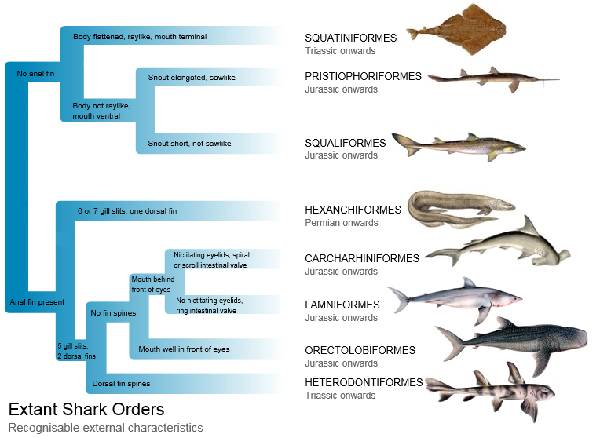

Sharks belong to the superorder Selachimorpha in the subclass Elasmobranchii in the class Chondrichthyes.

The Elasmobranchii also include rays and skates; the Chondrichthyes also include Chimaeras. It was thought that the sharks form a polyphyletic group: some sharks are more closely related to rays than they are to some other sharks, but current molecular studies support monophyly of both groups of sharks and batoids.
The superorder Selachimorpha is divided into Galea (or Galeomorphii), and Squalea (or Squalomorphii). The Galeans are the Heterodontiformes, Orectolobiformes, Lamniformes, and Carcharhiniformes. Lamnoids and Carcharhinoids are usually placed in one clade, but recent studies show the Lamnoids and Orectoloboids are a clade. Some scientists now think that Heterodontoids may be Squalean. The Squaleans are divided into Hexanchiformes and Squalomorpha. The former includes cow shark and frilled shark, though some authors propose both families to be moved to separate orders. The Squalomorpha contains the Squaliformes and the Hypnosqualea. The Hypnosqualea may be invalid. It includes the Squatiniformes, and the Pristorajea, which may also be invalid, but includes the Pristiophoriformes and the Batoidea.
Visit source page on "Wikipedia"